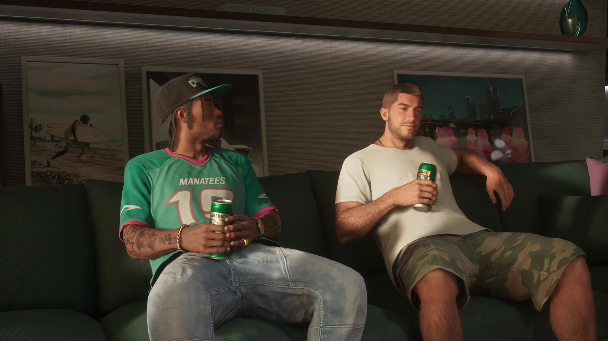
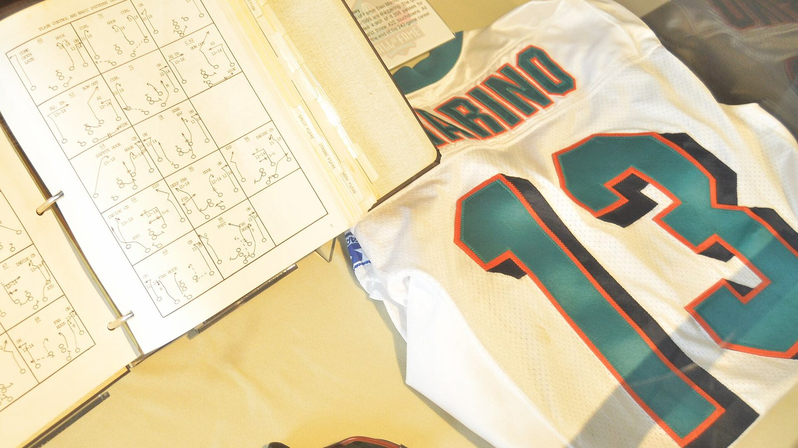

Джерси «Manatees» и «Майами Долфинс»
Опубликовано:
Бирюзовая футбольная джерси с морским млекопитающим в названии — узнаваемый стёб над «Майами Долфинс». Полное название команды Rockstar пока не показывала, так что это наша трактовка.


- В «Расширенном показе» на диване сидит парень в бирюзовой футбольной джерси MANATEES с номером 15 и розовой окантовкой.
- «Майами Долфинс» — команда НФЛ из Майами, основана в 1966 году, цвета — бирюзовый и оранжевый.
- Ламантин (manatee) — официальное морское млекопитающее штата Флорида.
- В игре дельфина заменил ламантин, а оранжевый — розовый, цвет Вайс-Сити.
Что в игре
Кадр из «Расширенного показа»: на зелёном диване двое с банками пива. На одном бирюзовая джерси американского футбола: надпись MANATEES, крупный номер 15, розовая окантовка воротника и рукавов. Это первая спортивная команда Леониды, которую видно на кадрах. Полного названия и города пока нет.
Что в реальности
«Майами Долфинс» (Miami Dolphins) играют с 1966 года. Фирменные цвета — бирюзовый (aqua) и оранжевый. Главная гордость клуба — сезон 1972 года: «Долфинс» не проиграли ни одного матча и выиграли Супербоул VII. Самый известный игрок — квотербек Дэн Марино: 17 сезонов в Майами (1983–1999), в 1984 году он набрал 5084 ярда пасом за сезон. Его номер 13 клуб вывел из обращения 17 сентября 2000 года, в 2005-м Марино вошёл в Зал славы.
Ламантин выбран не случайно. Это официальное морское млекопитающее Флориды: «морских коров» приезжают смотреть туристы, а лодкам в зонах, где они живут, приходится сбавлять скорость. Майамский дельфин превратился во флоридского ламантина — пародия сразу и на команду, и на сам штат.
Совпадает и отличается
| «Майами Долфинс» | GTA 6 | |
|---|---|---|
| Морское животное в названии | Дельфин | 🟣 Ламантин |
| Бирюзовая джерси | Да | 🟢 Да |
| Второй цвет | Оранжевый | 🟣 Розовый |
| Вид спорта | Американский футбол | 🟢 Американский футбол |
| Город команды | Майами | Узнаем в игре |
Источники: Rockstar Games («Расширенный показ» GTA 6); Miami Dolphins — официальный сайт клуба; Pro Football Hall of Fame (Dan Marino); Florida Statutes — символы штата.
Реальные фото: Фото: Erik Daniel Drost, CC BY 2.0 · Wikimedia Commons. Кадры игры: Rockstar Games.
Разборы кадров, слухи и факты за 30 секунд. Подписывайтесь:
YouTubeInstagramTikTok
 vs
vs
 vs
vs